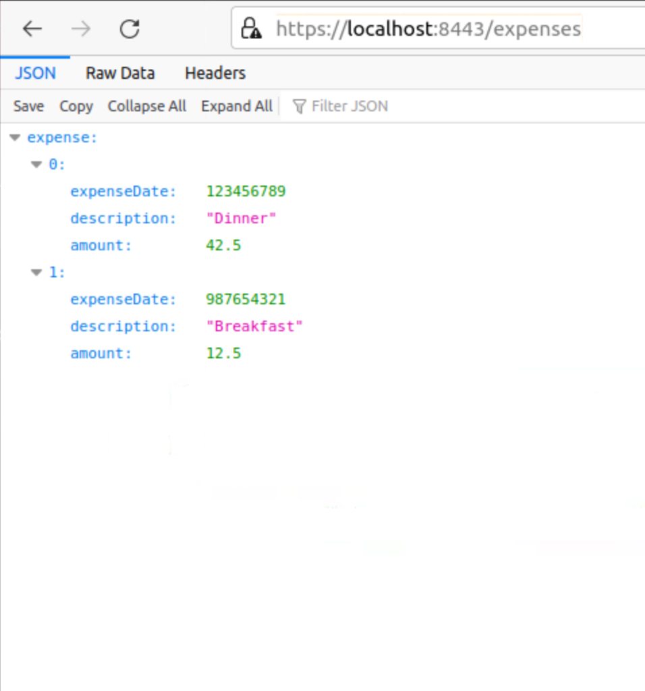

The expenses-server project is a simple example of a Java-based Spring Boot webapp, what in today's parlance would be called a "microservice" - it does one thing, does it adequately, and owns its own data (such as it is).
To run it, you must cd to ~/expenses-server, and give the command sh runserver. Leave this running in a window. For more details, see the appendix at the end of the exercise manual.
When the server is running, you can view the expenses by visiting
https://localhost:8443/expenses.
At the start of the course it should contain the "pre-seed" data,
just to show that the server is running.

After you have run the final version of the app or your solution
to the "Web Services" exercise, it may look something
similar, but with four HitchHiker's Guide-themed items instead of two banal entries.